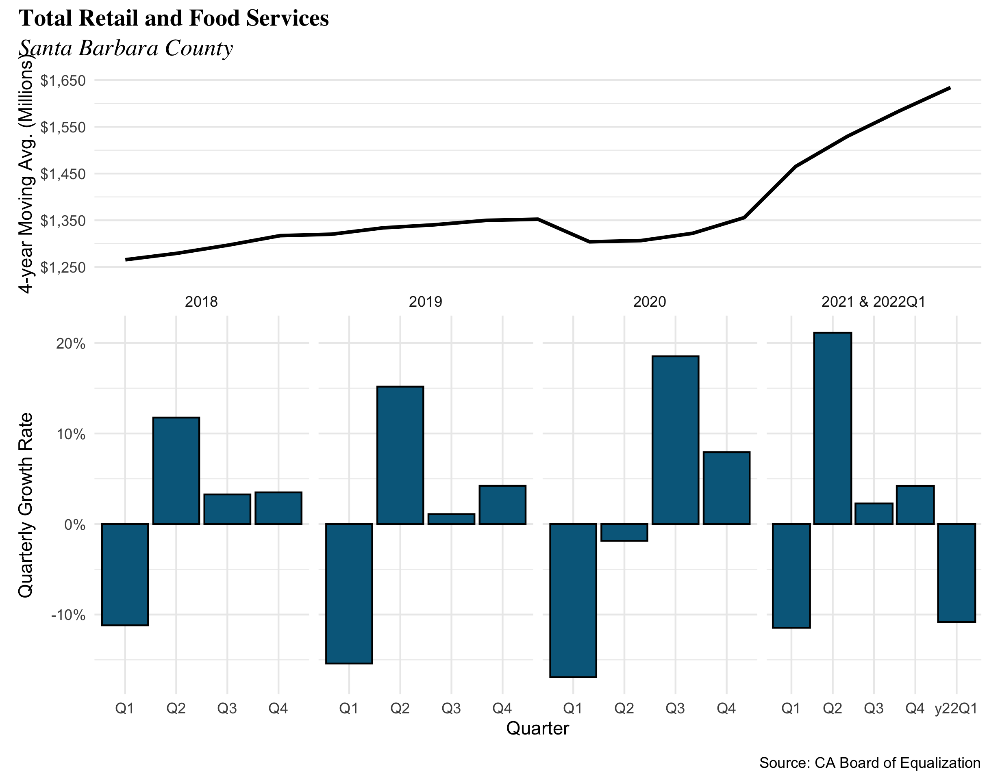
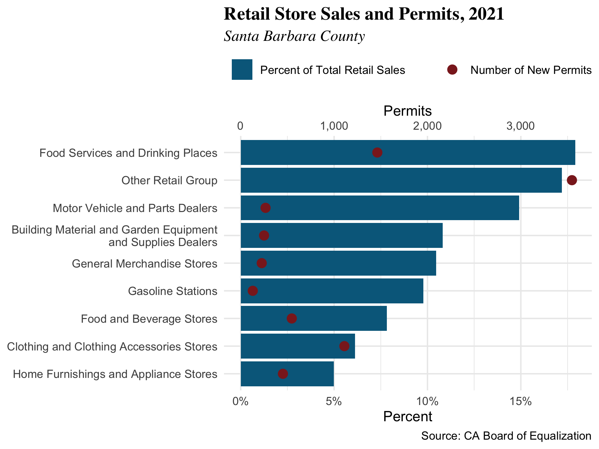
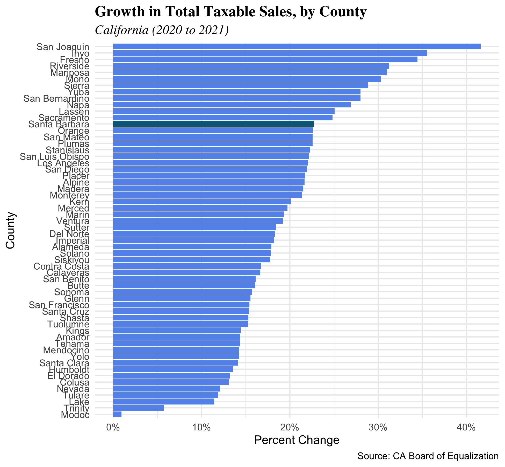
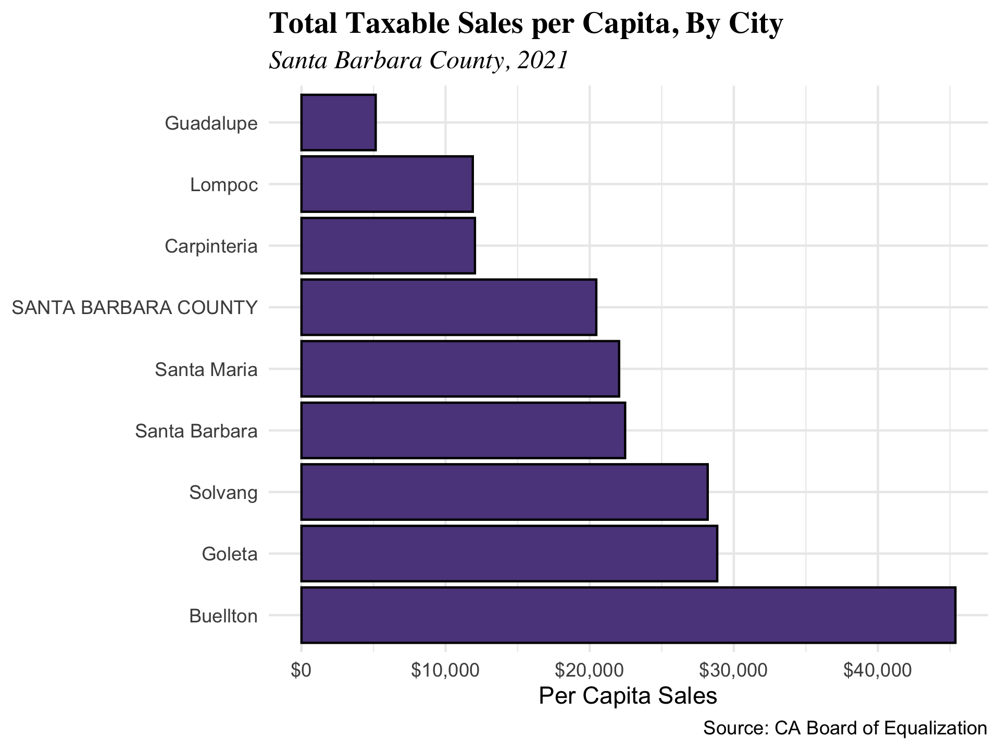

4 2021 update
The Taylor Rule, a monetary-policy “rule” that the nominal interest rate should be set in response to changes in inflation and output, recommended interest rate increases in 2021 because inflation was higher than the Fed’s target level of 2%. The Taylor Rule suggested nominal interest rates should have been about 5% by the end of 2021, and inflation has increased since then. Going forward, if the Taylor Rule is any indication, the fed funds rate should continue to increase.
4.1 Retail Sales
Key Points
- Retail sales growth continued its steady climb throughout the entirety of 2017 at an average growth rate of 0.49% every quarter.
- With 20.06% of total taxable sales, Food Services and Drinking Places remained the largest industry in the county.
- Buellton had the largest one-year growth in total sales of 10.3%, and Carpentaria had the largest one-year decline in growth of -7.05%.
Retail sales grew throughout 2017. The annualized growth rates by quarter were 0.23%, 0.66%, 0.61%, and 0.47%, respectively. The 4-quarter moving average for retail sales in the county remained steady, slightly increasing throughout the year. Overall, growth was stronger than in 2016: average quarterly growth was 0.49%, compared to 0.28% in 2016.

Disaggregated by industry, the top two industries (excluding Other Retail Group) by percentage of total sales was represented by Food Services and Drinking Places at the top with 20.06% of sales, followed by Motor Vehicle and Parts Dealers at 19.14%. The top three industries by number of permits, excluding Other Retail Group, were Food Services and Drinking Places at 1,333, Clothing and Clothing Accessories Stores at 1,025, and Food and Beverage Stores at 519.


Santa Barbara County ranked 49th out of 58 counties in terms of sales growth in 2017, which is worse than the county’s rank of 43 in 2016. After growing exponentially for the past three years, the county of Alpine experienced the largest decrease in total sales with a drop of 24.8%. Five counties experienced decreases in total sales from 2016 to 2017: Alpine, Modoc, Kings, Trinity, and Kern counties.

Three cities within Santa Barbara County decreased in total sales. Carpentaria decreased by 7.04%, Santa Barbara City by 1.69%, and Goleta by 0.66%. Buellton showed impressive growth of 10.33%, the highest in the county. Although Buellton had highest overall retail sales growth, it wasn’t the highest in sales growth per capita. Lompoc grew 9.12% in per capita sales, while Guadalupe grew 7.52%. In Buellton, the taxable sales per capita stands at $40,274, or 256% of the country average of $15,752, while in Guadalupe the taxable sales per capita is only $4,531 or 28.76% of the county average. This is a massive difference within the same county, with Buellton’s taxable sales per capita at almost nine times that of Guadalupe.

